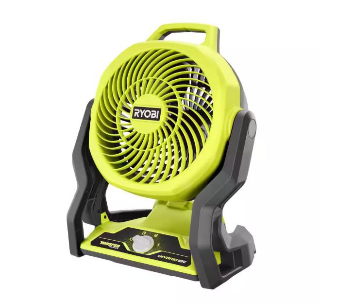

Overview
The Automatic Fan project addresses the inefficiency of traditional fans that blow air indiscriminately. By detecting hotspots with a thermal camera and rotating automatically to aim cool air exactly where it’s needed, the system reduces wasted energy and offers targeted comfort.

I worked on this project with a team of other engineering students. I was responsible for the brainstormming, the material procurements, modding the pan-tilt system and programming the different elements together. The project took a year to complete and the budget was $500.00 USD. At the end, we were able to sucessfully demostrate that the fan was able to meet the requirements
Design & Components
This solution was built around four main components: the fan, a motorized pan-tilt system, the MLX90640 thermal camera, and a Raspberry Pi. The fan used is the Hybrid Whispher. We used it because it is lightweight and powered by an 18V battery for portability. The Bescor MP-101 motorized tripod head provides the pan/tilt control. The MLX90640 IR camera detects heat gradients in a 32×24 pixel array and is compatiable with a Raspberry PI 4. Finally, the Raspberry Pi 4 processes data and controls the motorized mount, ensuring the fan points at the hottest region in view.
- Fan Assembly: Battery-powered, modified for lightweight operation.
- Pan-Tilt (Gimbal) Head: A motorized mount (Bescor MP-101) for precise rotation.
- Thermal Camera: An MLX90640 sensor, scanning in real-time for hotspots.
- Microcontroller: A Raspberry Pi 4 that interprets the thermal data and commands the motors.
- Protective Case: A 3D-printed enclosure safeguards the wiring and Pi from water splashes.
Build
The core of this project is the integration of the fan, motorized tripod, thermal camera, and power supply. Below is a more in-depth look at how each subsystem was assembled and how the software ties it all together.
Subsystem Assembly
Fan Assembly:

We began with an 18V portable fan chosen for its
cordless design. Several non-essential parts (like the base and certain covers) were removed
to reduce weight. This reduced the overall load on the pan-tilt system.
Pan-Tilt System Setup:

 A Bescor MP-101 motorized tripod head provides horizontal (pan) and vertical (tilt)
rotation. Normally controlled via a simple wired remote, it was modified so the Raspberry
Pi’s GPIO pins could drive the same signals. Each directional control wire (up, down, left,
right) is routed to a corresponding GPIO pin, and additional support for power/ground ensures
the head can still run off its own small battery pack or integrated power solution.
A Bescor MP-101 motorized tripod head provides horizontal (pan) and vertical (tilt)
rotation. Normally controlled via a simple wired remote, it was modified so the Raspberry
Pi’s GPIO pins could drive the same signals. Each directional control wire (up, down, left,
right) is routed to a corresponding GPIO pin, and additional support for power/ground ensures
the head can still run off its own small battery pack or integrated power solution.
Thermal Camera Integration:
 The MLX90640 IR camera is attached at the center of the fan using a 3D case. This camera connects to
the Raspberry Pi via using SCL and SDA pins. We used a refresh rate of about 2 Hz,
balancing performance with the Pi’s available processing resources. The camera captures
a 32×24 temperature grid, which the Pi software interprets to pinpoint the location of
the highest-temperature “blob” in view.
The MLX90640 IR camera is attached at the center of the fan using a 3D case. This camera connects to
the Raspberry Pi via using SCL and SDA pins. We used a refresh rate of about 2 Hz,
balancing performance with the Pi’s available processing resources. The camera captures
a 32×24 temperature grid, which the Pi software interprets to pinpoint the location of
the highest-temperature “blob” in view.

Power Supply Setup:
 We wanted everything powered from a single 18V battery, but the Pi requires 5V.
A step-down (buck) converter was introduced to regulate from 18V down to 5V/3A. The
fan itself runs directly off 18V, while the Pi harnesses the stepped-down supply. A 3D-printed
enclosure was created to protect the Pi, the step-down module, and associated wiring from
water splashes or accidental damage.
We wanted everything powered from a single 18V battery, but the Pi requires 5V.
A step-down (buck) converter was introduced to regulate from 18V down to 5V/3A. The
fan itself runs directly off 18V, while the Pi harnesses the stepped-down supply. A 3D-printed
enclosure was created to protect the Pi, the step-down module, and associated wiring from
water splashes or accidental damage.
Software Implementation
We wrote a Python script on the Raspberry Pi that:
- Continuously reads frames from the MLX90640 camera (each frame is a 32×24 matrix).
- Identifies hotspots by thresholding pixels above a certain temperature (e.g. ~28°C).
- Groups hot pixels into “blobs” and selects the blob with the highest average temperature.
- Determines how far this blob’s centroid is from the center of the frame.
- Sends signals to the Bescor MP-101 (via GPIO pins) to rotate left/right/up/down until the blob is centered.
- Maintains a target lock until a hotter spot appears, at which point it re-centers on the new, higher-temperature blob.
We fine-tuned constants like dead zones, proportional gains, and blob-size thresholds through trial and error. The code can be seen here.
Assembly Challenges & Solutions
- Mounting the Fan: Drilling was required to attach the fan securely to the tripod head. We ensured the final combined weight (fan + bracket + Pi enclosure) stayed under the pan-tilt’s maximum load limit (10 lbs).
- Wiring & Power: The biggest challenge was consolidating everything into one battery without messing up voltage requirements. A buck converter and careful splicing solved this.
- Software Calibration: The IR camera’s resolution is only 32×24 pixels, so noise and small changes can throw it off. Iterative testing let us refine the thresholds for minimum blob size (so it ignores random hot spots like a coffee cup) and maximum blob size (so it doesn’t misread large backgrounds).
Overall, the build required mechanical adaptation, electrical wiring expertise, and software calibration to achieve a cohesive, automated cooling solution.
Testing & Results
We conducted multiple tests to validate performance. Water-resistance tests ensured the protective enclosure kept the Pi and wiring safe under light splashing (mimicking an IP3–IP4 style test). For functional checks, we verified the fan could rotate a full ~180°, detecting and following a human walking across the camera’s field of view. At lower speeds, the fan remained under ~50 dB, meeting our noise requirement. Finally, the fan’s total weight is around 8–9 lbs, so it’s easy to set up in less than a few minutes.
Reflection
I learned many things from doing this project. The first key lesson was taking an idea from simple brainstorming all the way to a fully realized concept—a process that was both exciting and challenging. I also gained hands-on experience in programming and soldering, which helped me better understand how hardware and software come together in a real-world application. Finally, I discovered how to modify existing products so they work more effectively for my specific goals.